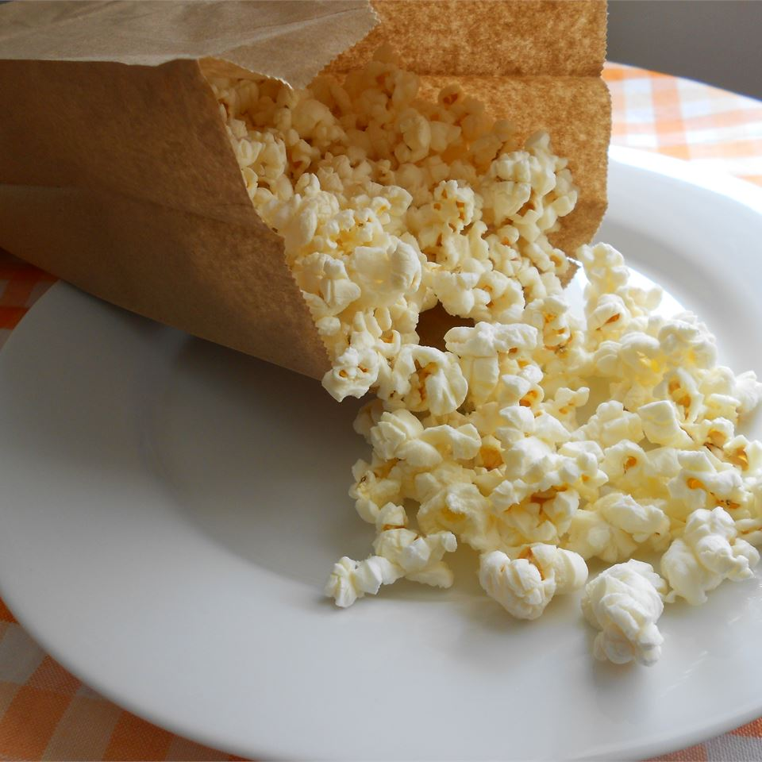

Popcorn

Description
Ever wanted to make lazy microwave popcorn, but not from a factory bag? This recipe by Acontorer on Allrecipes will be your jam.
- 1/2 cup unpopped popcorn
- 1 teaspoon vegetable oil
- 1/2 teaspoon salt, or to taste
- In a cup or small bowl, mix together the unpopped popcorn and oil. Pour the coated corn into a brown paper lunch sack, and sprinkle in the salt. Fold the top of the bag over twice to seal in the ingredients.
- Cook in the microwave at full power for 2 1/2 to 3 minutes, or until you hear pauses of about 2 seconds between pops. Carefully open the bag to avoid steam, and pour into a serving bowl.